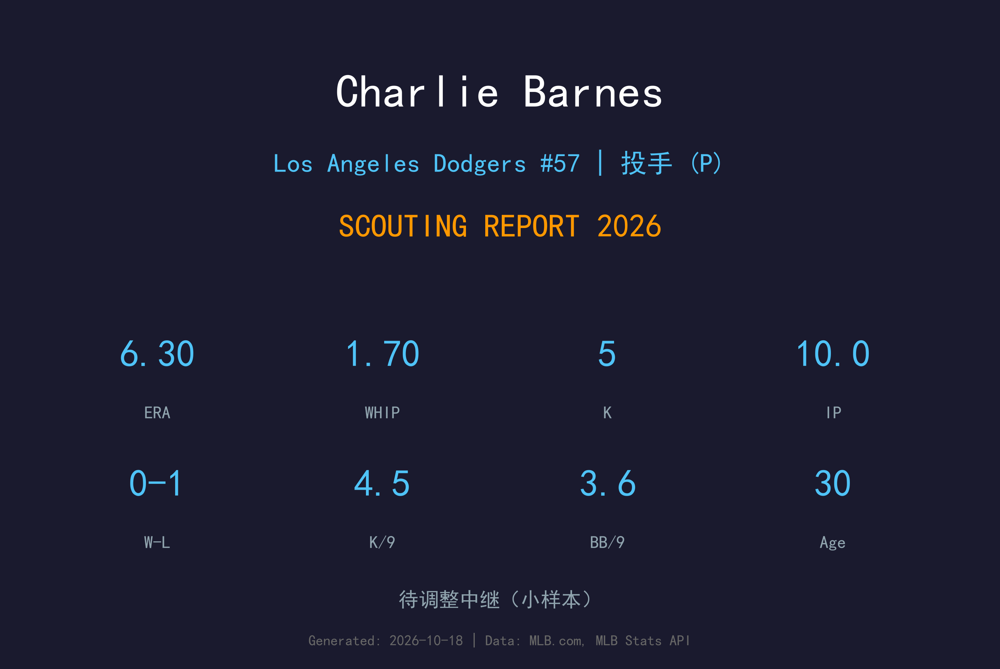
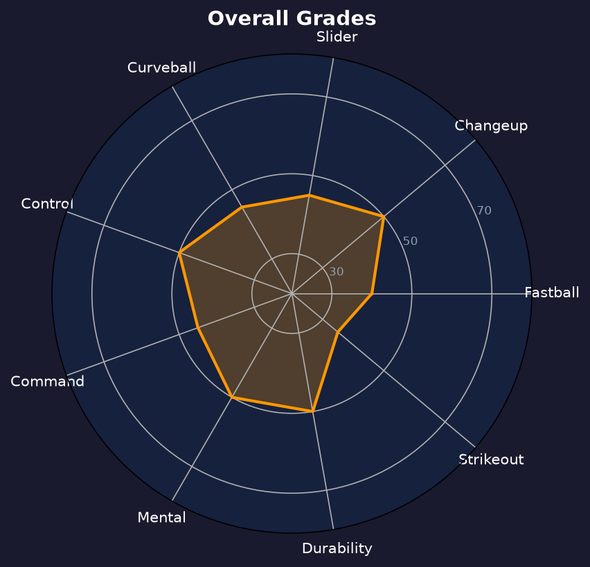

Los Angeles Dodgers #57 | 投手 | 已离队（8/18 后长住 3A，季后离开道奇组织）

| 项目 | 内容 |
|---|---|
| 全名 | Charles Barnes |
| 出生日期 | 1995-10-01 |
| 年龄 | 30岁 |
| 出生地 | 美国南卡罗来纳州 Sumter |
| 身高/体重 | 6'2" / 190 lbs |
| 投球/击球 | 左投 / 左打 |
| MLB首秀 | 2021-07-17 (双城队) |
| 选秀 | 2017年 第4轮 (双城，总第114顺位) |
| 大学 | Clemson University |
| 背号 | #57 |
| 状态 | 已离队（8/18 后长住 3A，季后离开道奇组织） |
Charlie Barnes 是一名左投长中继/轮换型投手，以控球与多种变化球为主，而非球速。他的快速球均速约在 88-91 mph，属于典型的 soft-tossing lefty，需要依靠精准的位置与变速球来生存。2021 年在双城队 8 场先发缴出 5.92 ERA 后，他长期在小联盟与联盟边缘徘徊，直到 2026 年与道奇签约并短暂升上大联盟。2026 年他整季 4 场后援出赛、10.0 局，缴出 6.30 ERA、1.70 WHIP、5 三振 4 保送，样本极小且仍挣扎；8 月 18 日后长住 3A Oklahoma City，季后已离开道奇组织。他的上限是 depth starter / long reliever，在道奇轮值深度中扮演应急角色。
| 统计项目 | 数值 |
|---|---|
| 出赛 (G) | 4 |
| 先发 (GS) | 0 |
| 胜场 (W) | 0 |
| 败场 (L) | 1 |
| 救援成功 (SV) | 0 |
| 中继成功 (HLD) | 0 |
| 自责分率 (ERA) | 6.30 |
| 投球局数 (IP) | 10.0 |
| 被安打 (H) | 13 |
| 自责分 (ER) | 7 |
| 全垒打 (HR) | 3 |
| 三振 (K) | 5 |
| 保送 (BB) | 4 |
| WHIP | 1.70 |
| K/9 | 4.50 |
| BB/9 | 3.60 |
| K/BB | 1.25 |
| HR/9 | 2.70 |
注：2026 年仅 4 场、10 局的大联盟样本，数据波动极大，不宜过度解读。
| 赛季 | 球队 | G | GS | W-L | ERA | IP | K | BB | WHIP | K/9 | BB/9 |
|---|---|---|---|---|---|---|---|---|---|---|---|
| 2021 | MIN | 9 | 8 | 0-3 | 5.92 | 38.0 | 20 | 16 | 1.63 | 4.74 | 3.79 |
| 2022 | — | — | — | — | — | — | — | — | — | — | — |
| 2023 | — | — | — | — | — | — | — | — | — | — | — |
| 2024 | — | — | — | — | — | — | — | — | — | — | — |
| 2025 | — | — | — | — | — | — | — | — | — | — | — |
| 2026 | LAD | 4 | 0 | 0-1 | 6.30 | 10.0 | 5 | 4 | 1.70 | 4.50 | 3.60 |
| 统计项目 | 数值 |
|---|---|
| 出赛 (G) | 13 |
| 先发 (GS) | 8 |
| 胜场 (W) | 0 |
| 败场 (L) | 4 |
| 救援成功 (SV) | 0 |
| 中继成功 (HLD) | 0 |
| 自责分率 (ERA) | 6.00 |
| 投球局数 (IP) | 48.0 |
| 被安打 (H) | 59 |
| 全垒打 (HR) | 7 |
| 三振 (K) | 25 |
| 保送 (BB) | 20 |
| WHIP | 1.65 |
| K/9 | 4.69 |
| BB/9 | 3.75 |
| K/BB | 1.25 |
| HR/9 | 1.31 |
注：生涯大联盟数据极为有限，主要由 2021 年双城先发与 2026 年道奇后援组成。
Barnes 采用标准四分之三（three-quarters）投球角度，动作简洁、可重复性高。他的身体控制能力不错，6 尺 2 寸的身材让他的出手点具有一定隐蔽性。不过，由于球速不突出，他必须更依赖机制的一致性来制造好球带边缘的 quality pitch；一旦疲劳或节奏失衡，控球会明显下滑。

Charlie Barnes 是典型的 organizational depth 左投，能在小联盟稳定吃局数，偶尔作为应急升上大联盟。但在道奇这样竞争激烈的球队中，他需要显著改善球质或快速球球速才能获得更稳定的 MLB 机会。
Charlie Barnes 出生于南卡罗来纳州 Sumter，高中时期是当地备受瞩目的左投。他进入 Clemson University，在大西洋海岸联盟（ACC）中担任先发投手，以沉稳的控球与变速球闻名。2017 年 MLB 选秀中，他在第 4 轮被明尼苏达双城队选中。
Barnes 以沉稳、不急不躁的比赛风格著称。他不属于激情型投手，而是依靠节奏与控球来与打者周旋。他的 Clemson 背景让他在面对压力时较为冷静，但大联盟级别的 firepower 确实有限。